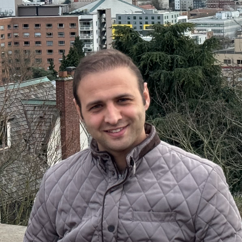
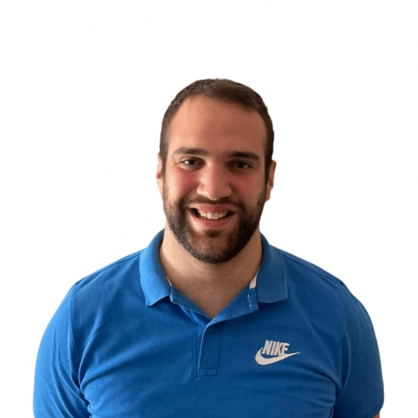
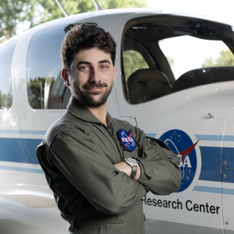

Dr. Logan E. Beaver
Principal Investigator

Hossein Gholampour
PhD Student, ODU

Hossein Talebirostami
PhD Student, ODU

Filippos Tzortzoglou
Visiting PhD Student, Cornell
Yvan Sipowa
MEng Student, ODU

Johan Jallah
MS Student, ODU

Yotam Granov
Visiting Scholar, IIT Technion
Brock Marcinczyk
Undergraduate Researcher, ODU
Bryan Reali
Undergraduate Researcher, ODU